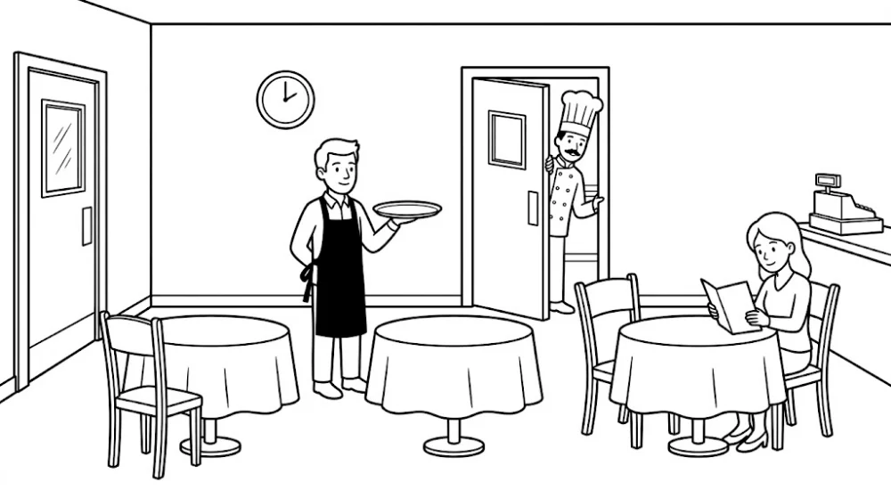

Français · UPE2A NSA
{{ titre }}
Prénom
Date
Le restaurant
Tu lis les consignes et tu fais ce qui est demandé.
Les mots outils
{{ b }}

{{ c.num }}
{{ c.avant }}
{{ c.outil }}
{{ c.apres }}
Pour l'enseignante
Corrigé — où c'est, dans l'image
Chaque consigne ne se réussit que si le mot outil est compris : c'est lui qui dit où agir.
{{ c.num }}
{{ c.outil }}
{{ c.ou }}